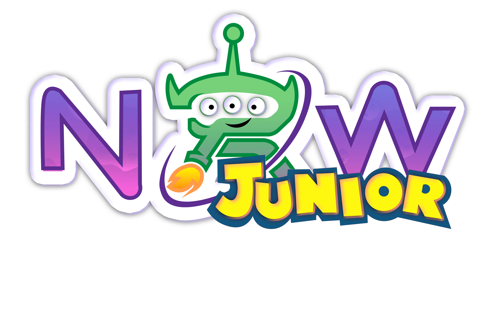
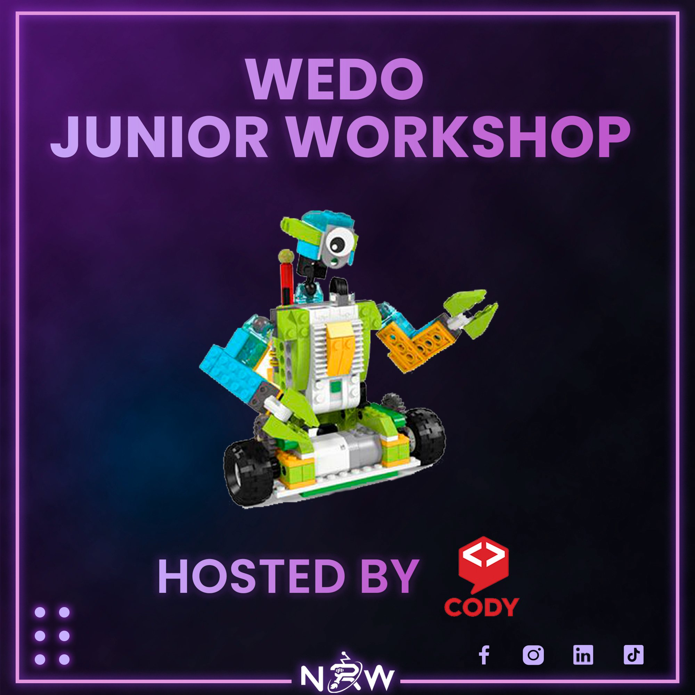
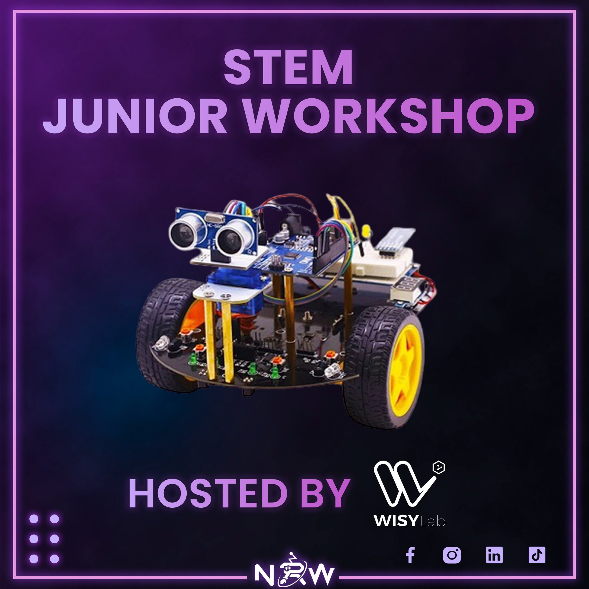
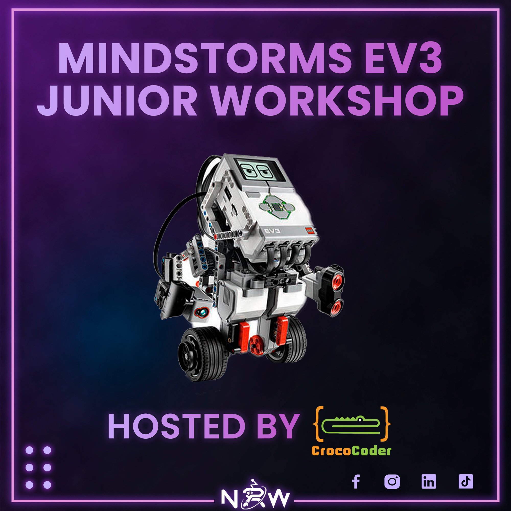
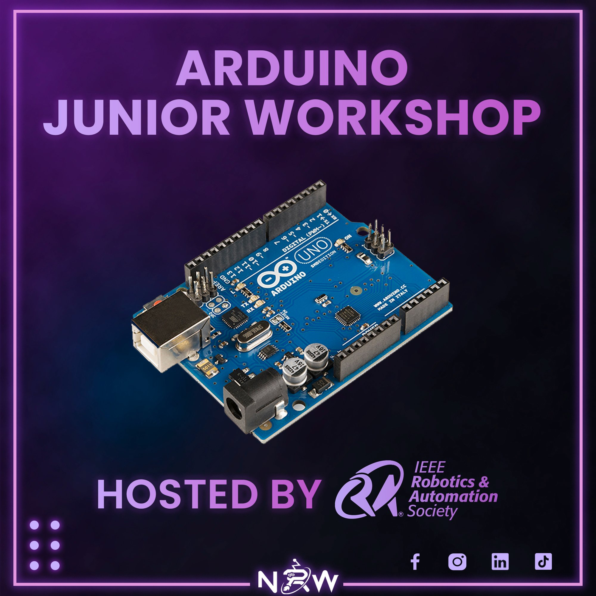

<div class="main">
    
    <div class="container">
        <div class="block" data-aos-duration="1000" data-aos="fade-down">
            <div class="logo">
            <div class="intel row">
                <div class="info col-6"><p>19 June , 2022</p></div>
                <div class="info loc col-6"><p>Mediterranean school of Business</p></div>
            </div>
        </div>
        <div class="block" data-aos-duration="1000" data-aos="fade-down">
            <h2> What is NRW Junior?</h2>
            <p>
                NRW Junior  is a one-day event dedicated to the younger generation (ranging from 6 to 18 years old), seeking to introduce our youngsters to the vast world of robotics by indulging them in various workshops and training sessions and finishing off with a challenge where they'll put their skills into practice.
                Keep in mind that NRW Junior is a separate event from the main congress NRW 4.0!
            </p>
        </div>
        <div class="horizontal row">
            <div class="block col-6" data-aos-duration="1000" data-aos="fade-right">
                <h2>Why NRW Junior?</h2>
                <p>
                    The NRW community believes that diversity is crucial to building a good community and creating harmony among its members. With that being the case, we decided to reveal to our audience one of the many surprises that await them throughout their journey for this year's edition. 
                </p>
            </div>
        
           <div class="block col-6"data-aos-duration="1000" data-aos="fade-left" >
            <h2>Who is NRW Junior for?</h2>
            <p class="presentation">     
            Are you a parent who wants to introduce their child to the world of robotics, IoT and embedded systems? Are you a teenager who still has an ambiguous view about the field of robotics?
            Well, this is your lucky day .
            NRW JUNIOR offers you the opportunity to discover the world of robotics in a fun atmosphere.
          </p>
         </div>
        </div>
        
        <div class="block">
            <h2> NRW Junior Workshops</h2>
           <div class="row display" id="workshop">
            
            
            </div>
        </div>
    </div>
    
</div>
